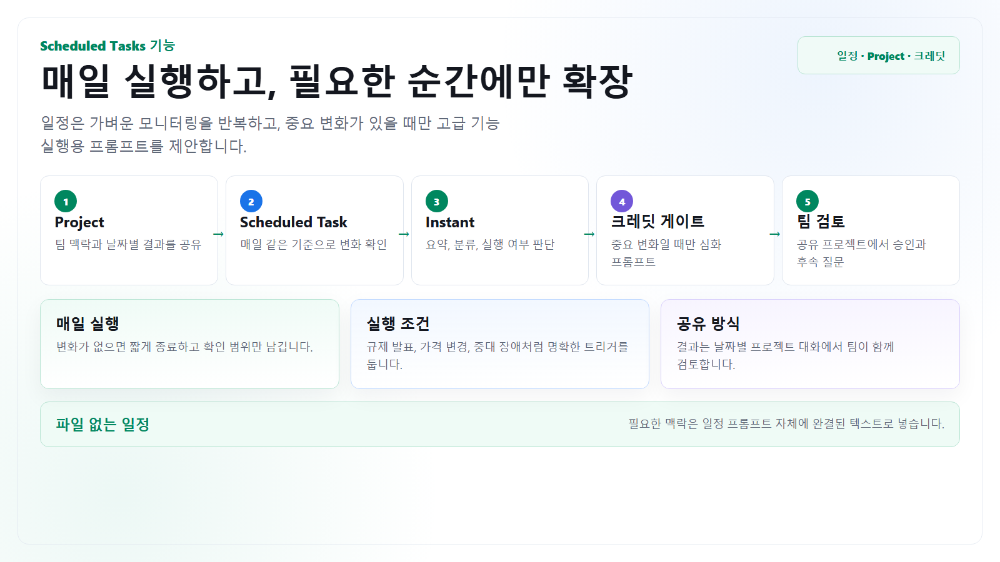

정기 브리핑
매일 업계 뉴스, 경쟁사 공지, 프로젝트 리스크를 같은 형식으로 정리합니다.
Scheduled Tasks
Scheduled Tasks는 한 번 실행, 반복 실행, 변화 모니터링을 정해진 시간에 수행합니다. 파일 첨부 없이 사용할 때는 일정 프롬프트 안에 목적, 맥락, 출처 범위, 변화 기준, 출력 형식을 완결된 텍스트로 넣어야 합니다.

Scheduled Tasks는 프로젝트 안에서 만들더라도 프로젝트 파일을 읽지 못할 수 있습니다. 이 가이드는 파일 대신 일정 프롬프트 안의 텍스트 맥락, 공개 URL, 허용된 플러그인과 앱만 사용합니다.
매일 업계 뉴스, 경쟁사 공지, 프로젝트 리스크를 같은 형식으로 정리합니다.
매번 전체 보고서를 만들지 않고 의미 있는 변화가 감지될 때만 알려주게 합니다.
매주 회의 준비, 월간 KPI 확인, 마감 전 체크리스트처럼 주기가 있는 일을 맡깁니다.
공식 문서 기준으로 Enterprise 사용자는 최대 15개의 활성 Scheduled Tasks를 둘 수 있고, 작업은 한 시간보다 자주 실행할 수 없습니다. Scheduled 페이지는 현재 웹과 모바일에서 관리하며, 장기간 확인하지 않은 작업은 자동으로 일시 중지될 수 있습니다.
Project + 일정
| 단계 | 설정 | 결과 공유 방식 | 검토 포인트 |
|---|---|---|---|
| 1. 공유 프로젝트 | 업무 책임자는 Edit, 결과 확인자는 Chat 권한으로 초대합니다. | 팀원의 사이드바에 프로젝트가 표시되고 프로젝트 대화를 함께 봅니다. | 민감한 다른 업무 대화가 섞이지 않게 반복 업무 단위로 나눕니다. |
| 2. 고정 결과 대화 | “01_일일 브리핑”, “02_주간 심화 조사”처럼 결과 위치를 고정합니다. | 날짜가 포함된 제목과 동일한 표 구조로 이전 결과와 비교합니다. | 원본 결과를 덮어쓰지 않고 새 실행 또는 Branch로 이어갑니다. |
| 3. Scheduled Task | 목적, 실행 시각, 공개 출처, 변화 기준, 출력 형식을 프롬프트에 포함합니다. | 작업 소유자가 알림을 받고 결과 대화를 확인합니다. | 팀 전원에게 자동 알림이 간다고 가정하지 않습니다. |
| 4. 팀 검토 | 담당자가 사실, 출처, 우선순위와 고급 기능 실행 필요성을 승인합니다. | 프로젝트 링크를 사내 채널에 고정하고 검토 완료 상태를 남깁니다. | 심화 조사는 원본 결과와 분리된 대화에서 실행합니다. |
크레딧 효율화
단순 요약과 프롬프트 설계는 Instant에서 처리하고, 일정 결과에 명확한 변화가 있을 때만 Deep Research나 이미지 생성 후보를 제안하게 합니다. 이렇게 하면 반복 업무가 매일 공유 크레딧을 소비하는 흐름을 피할 수 있습니다.
일정 이름, 범위, 출처, 변화 기준, 결과 표를 먼저 작성합니다.
중복 질문, 모호한 조건, 불필요하게 긴 출력을 줄이고 예상 결과를 샘플로 확인합니다.
일정은 중요 변화가 있을 때만 Deep Research 또는 이미지 프롬프트를 제안합니다.
담당자가 가치와 범위를 확인한 뒤 고급 기능을 한 번 실행합니다.
긴 결과를 요약하고 반론, 발표 목차, 플러그인 입력문으로 바꿉니다.
GPT-5.5 Instant는 현재 Rate Card에서 무제한으로 표시되지만 오남용 방지 제한이 적용되고, 요청 난도가 높아 Medium으로 자동 전환되면 크레딧이 발생할 수 있습니다. “무제한”을 검토 없는 대량 실행으로 해석하지 않습니다.
복사해서 쓰기
작업 이름: 국내 금융권 AI 상담 동향 일일 모니터링
실행 일정: 매주 월요일부터 금요일까지 오전 8시 30분
목적: 고객지원 자동화 프로젝트 팀이 중요한 변화만 빠르게 확인
고정 맥락:
- 우리 팀은 FAQ 자동화 PoC를 검토 중
- 관심 영역은 고객 불만, 개인정보, 금융당국 지침, 실제 도입 효과
- 파일과 프로젝트 파일은 사용하지 않음
- 2026년 이후 공개 웹과 이 프롬프트에 적힌 맥락만 사용
매 실행 지침:
1. 금융사 공식 발표, 금융당국·개인정보위 자료, 주요 언론을 우선 확인
2. 전일 결과와 비교해 새 발표, 수치 변경, 규제 변화만 추출
3. 변화가 없으면 “중요 변화 없음”과 확인한 출처 범위만 5줄 이내 작성
4. 변화가 있으면 기관 / 날짜 / 변화 / 영향 / 출처 URL 표로 작성
5. 사실, 기관 주장, 언론 해석을 분리
6. Deep Research를 자동 실행하지 말 것
7. 아래 조건 중 하나를 만족할 때만 Deep Research 실행용 프롬프트를 작성
- 금융당국 또는 개인정보위의 새 공식 지침
- 2개 이상 금융사의 같은 유형 도입 발표
- 고객 피해 또는 대규모 장애 보도
8. 이미지 생성을 자동 실행하지 말 것
9. 발표 자료가 필요할 정도의 변화가 있을 때만 16:9 요약 이미지 프롬프트를 작성
출력 순서:
- 오늘의 결론 3줄
- 변화 표
- 우리 프로젝트 영향 상/중/하
- 담당자가 오늘 확인할 질문 최대 5개
- 고급 기능 실행 후보 프롬프트
- 확인한 출처 URL